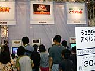
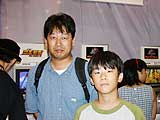
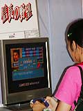
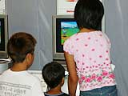

| #4 ゲームボーイアドバンス ライセンシータイトル体験コーナーレポート その５ |
ゲームボーイアドバンス ライセンシータイトル体験コーナーレポート その５ page1 ・・・ page2 |
| ● ジュラシックパークIII アドバンスドアクション コナミ |
|
 大ヒット映画『ジュラシックパークIII 』が早くもゲームボーイアドバンスに登場です。恐竜と必死に戦うアクションアドベンチャーはスゴい迫力。携帯ゲームで手軽に遊べるのはうれしいですね。映画そのままの恐竜たちにも感動します。どんな恐竜が出てくるか、ワクワクしちゃいます。さて、今回の舞台は、凶暴な恐竜たちがウロウロしている孤島。登場人物たちは、恐竜から逃げながら脱出をはかります。 さすが注目タイトル、列にはかなりの人たちが並んでいました。小学生から大人まで、年齢層はずいぶん幅広いみたいですね。美しいグラフィックに魅せられ、後ろの列の人たちが人垣の合間から一生懸命画面をのぞきこもうとしている場面も。恐竜の動きは本当に映画そのもので、みなさんも目を見張っていたようです。 |
| ● ゴエモン〜ニューエイジ出動！（仮称） コナミ |
|
 人気キャラクター、ゴエモンが生まれ変わって出動です。今度のゴエモンはちょっとカッコいい!? 新しいゴエモンたちが、妖怪を倒しながら、ＮＩＰＰＯＮ中を冒険します。キャラクターのコミカルな動きが楽しいですね。といっても、大人でもじゅうぶんに遊べるゲーム性。アクションゲームとして評価の高いシリーズなのです。 体験コーナーは子どもたちに大人気です。小さなお子さんも上手にキャラクターをジャンプさせて、ゲームを進めていました。お父さん、お母さんとやってきた黒木裕也くんは中学１年生。スーパーファミコンの「ゴエモン」が大好きで、いまでもプレイし続けているそうです。久々のゴエモンの新作に、期待いっぱいの様子です。親子３人、仲良く列に並んでいました。もしかして、お父さんもゲーム好きなのかな？ |
| ● 信長の野望 コーエー |
|
 お待たせしました！ コーエーの人気歴史シミュレーションゲームがついにアドバンスで発売です。緻密なシミュレーションゲームには、携帯ゲームがピッタリ！ 「毎日、信長のことが頭から離れない」なんて人も、これで安心です。電車の中でも野外でも、心おきなく戦略を練ってください。さらに、最大４人まで同時プレイができる対戦モードは、アドバンスならではの魅力です。 「アドバンス版の特徴は、対戦用にオリジナルのシナリオが６本用意されていること。いつものシナリオよりも短めになっています」とメーカースタッフ。「今日の体験コーナーでは、年齢の高いかた、固定ファンのかたがたがいらっしゃってますね」と語ってくれました。ここでは、すでに完成版が遊べるそうです。ファンなら、要チェックですね。じっくり遊んでいかれるかたが多かったようですよ。 |
| ● 携帯電獣テレファング２ パワーバージョン スマイルソフト ●携帯電獣テレファング２ スピードバージョン スマイルソフト |
|
 新感覚ＲＰＧの第２弾が、パワーアップして登場です。新しい電獣もたくさん増えて、新たな冒険をたっぷり楽しめますよ。携帯電話と同じ機能を使うというユニークなゲーム性は、ほかのソフトでは見られませんね。まだ携帯電話を買ってもらえないお友達も、ワクワクしながらプレイしているんじゃないかな？ アドバンスの２人プレイにも対応していますよ。 モンスターの造形がとっても個性的ですね。体験コーナーは小さい男の子たちに人気。小さいお子さんが、お姉さんに助けられながらプレイしているほほえましい姿も見られました。２頭身キャラがちょこちょこフィールドを歩き回る様は、とても可愛いらしく、小さなお客さんたちをとりこにしていました。 |
ゲームボーイアドバンス ライセンシータイトル体験コーナーレポート その５ page1 ・・・ page2 |
| 前のレポートへ | 次のレポートへ |
|
|